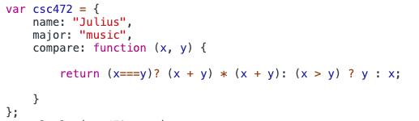
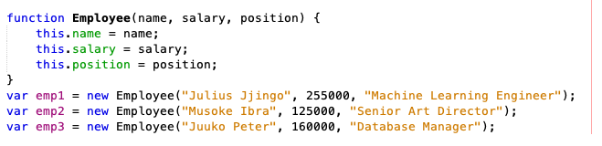
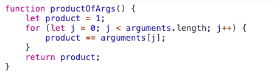
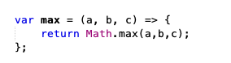

Q1. Determine what this Javascript code will print out (without running it):
x= 1;
var a = 5;
var b = 10;
var c = function(a, b, c) {
var x = 10;
document.write(x);
document.write(a);
var f = function(a, b, c) {
b = a;
document.write(b);
b = c;
var x = 5;
}
f(a,b,c);
document.write(b);
}
c(8,9,10);
document.write(b);
document.write(x);
}
Result:--> 10 8 8 9 10 1
Q2. What is the difference between a method and function?
A function is defined outside of an object. A method is defined as the property of an object.
Q3. What does 'this' refer to when used in a Java method?
'this' keyword refers to an object, that object which is executing the current bit of javascript code. In other words, every javascript function while executing has a reference to its current execution context, called this..
Q4. What does 'this' refer to when used in a JavaScript method?
It refers to the "owner" of the method.
Q5. What does 'this' refer to when used in a JavaScript constructor function?
The keyword this inside the constructor function points to the newly created object.
Q6. Assume object x is the prototype for object y in Javascript. Object x has a method f() containing keyword 'this'. When f is called by x.f(), what does 'this' refer to?
It first refers to x(own), if property is not found it might refer to y(inherited) property.
Q7. What is a free variable in JavaScript?
Free variables are simply the variables that are neither locally declared nor passed as parameter.
Q8. Create an object that has properties with name = "fred" and major="music" and a property that is a function that takes 2 numbers and returns the smallest of the two, or the square of the two if they are equal.

Q9. Write Javascript code for creating three Employee objects using the "new" keyword and a constructor function. Employee objects have the following fields: name, salary, position.

Q10. Write a Javascript function that takes any number of input arguments and returns the product of the arguments.

Q11. Write an arrow function that returns the maximum of its three input arguments.
